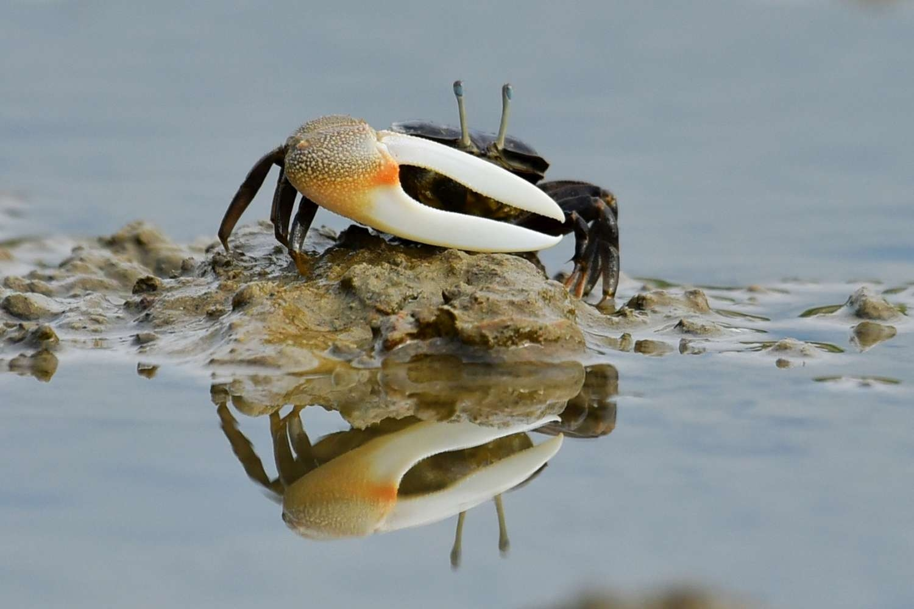
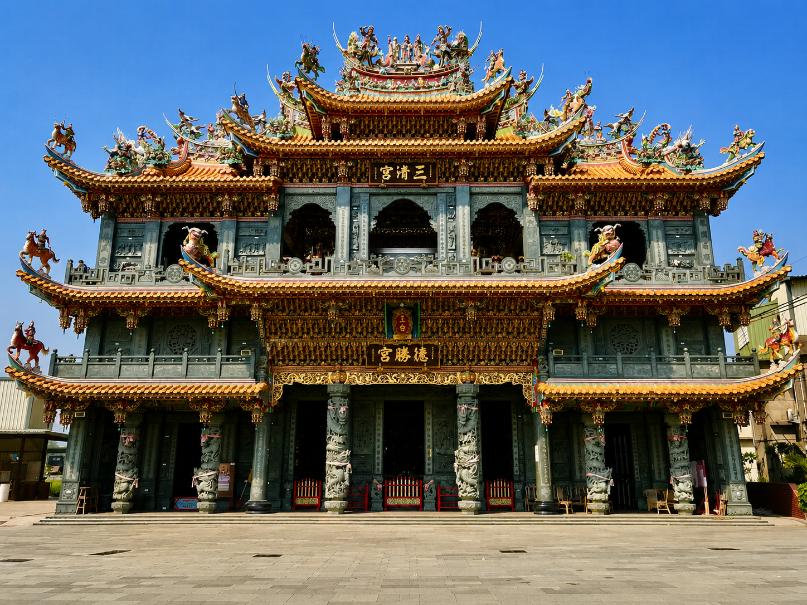
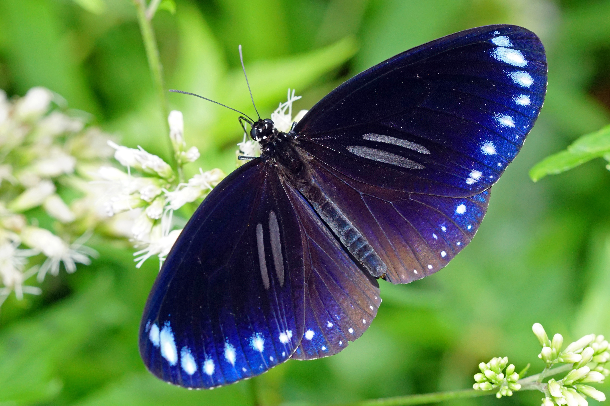
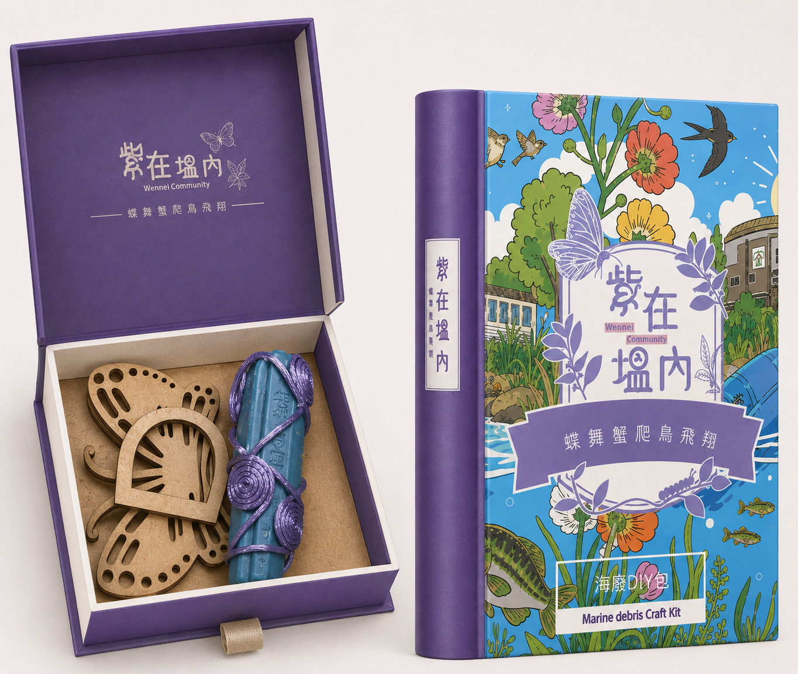
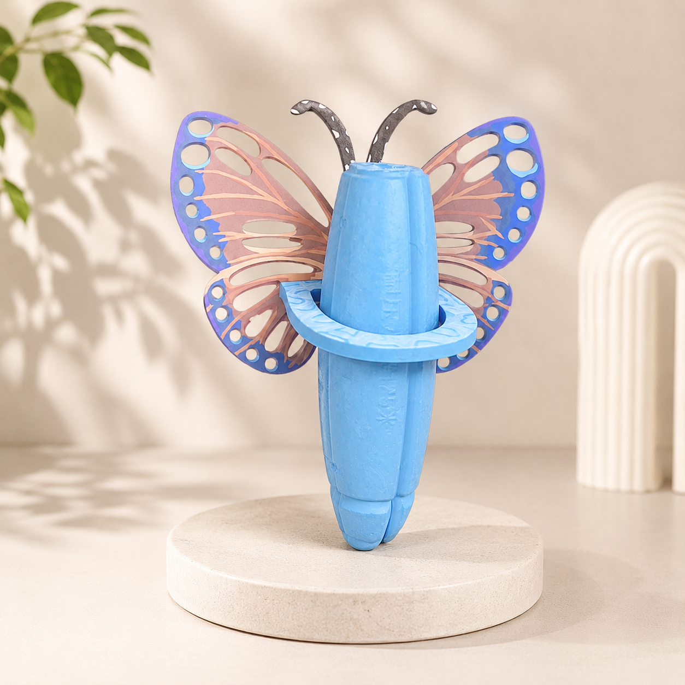
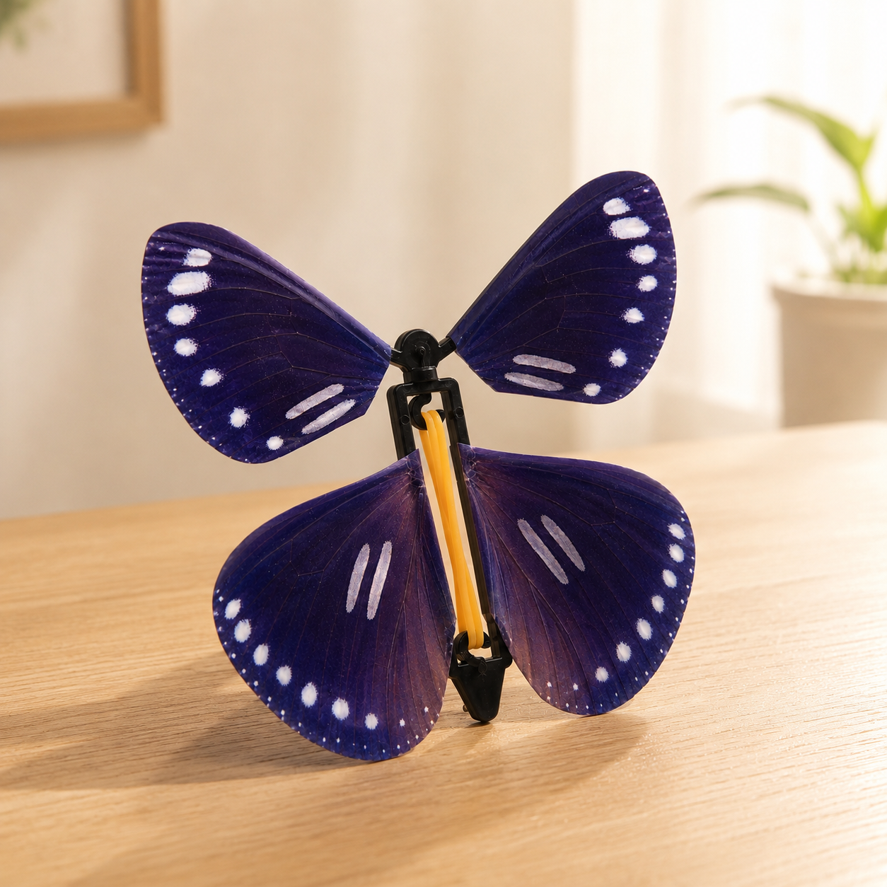

塭內社區地處中港溪出海口北側沖積平原，面積約175.11公頃。雖然國道三號與五福大橋帶來發達的聯外路網，卻也因高架道路阻隔而呈現地理空間的邊緣化。
位於臺灣苗栗縣竹南鎮港墘里南緣（港墘里第10至13鄰），地理中心點：北緯24°40'18"、東經 120°51'03"。其界限外圍皆未納入都市計劃區，完整保存了沿海生態的純粹性。
東起南北街與大厝里，西隔西濱快速道路（台61線）與臺灣海峽相望，北以竹南聯絡道與海口里相接，南則緊鄰中港溪北側沿岸，與造橋鄉及後龍鎮隔溪對望。
國道三號高架橋與五福大橋如長虹穿梭、聯絡四方，雖然提供了發達的外網，但在地理與社會感受上，高架橋與快速道路卻也宛若一道道物理藩籬，使社區在地理空間上呈現某種程度的邊緣化。
請點擊下方刻度，感受自西向南、因風海交會形成的立體漸進生態系：
西側直接承受強烈鹹風，沙地乾燥多鹽。這裡爬滿了防沙先驅植被「馬鞍藤」，其鞍形厚葉能降低蒸散，並綻放紫色漏斗狀花朵。它是保護內陸免遭風沙與潮水肆虐的首道防線。

自清朝以來，先民築堤防海、漁撈為生。這裡不僅是凝聚家族倫理的同姓聚落「葉家庄」，也是凝聚中港溪出海口信仰的歷史重鎮。

德勝宮創建於清同治九年（1870年），主祀朱、李、池三府王爺，是葉氏宗族「葉家庄」的信仰核心。1943年（昭和18年）中港溪口發生巨鯨擱淺，三王爺鑾乩顯靈警告庄民勿搭船出海，使庄民幸免於隨後發生的32人沉船溺斃慘劇。這段歷史深深烙印在塭內先民的記憶中。
官義渡生態公園佔地約5公頃，保留了臺灣西部少數完整的大型水筆仔紅樹林。此處立有清道光十六年（1836年）淡水廳同知婁雲所設的「中港溪官義渡碑」複製品。當時因應中港溪水流湍急且械鬥頻繁，特設官船免費擺渡，以促進地方和平與交通往來，見證了地方交通的變遷。
塭內社區管轄的「1311號保安林」，是全臺灣第一個被證實的斯氏紫斑蝶春季繁殖與育雛熱點，這裡孕育著無數斑蝶後代的搖籃。
斯氏紫斑蝶每年春季北返時，會飛抵塭內保安林，尋找攀附在木麻黃樹幹上的「羊角藤」（夾竹桃科藤本植物）並於葉片上產卵。這是牠們孕育下一代最重要的食草。社區志工與臺灣紫斑蝶生態保育協會攜手，每年在此進行精細的族群與食草調查。
為了保護紫斑蝶，每年3至6月期間，社區巡守隊實施「不除草政策」，保留大花咸豐草等蜜源，並聯合杜邦、環球晶圓等企業，定期清除大黍、小花蔓澤蘭等外來入侵攀藤，補植臭娘子、台灣赤楠、白水木等原生蜜源植物，確保「生態老闆」年年如期造訪。

塭內社區不論獲選為「國家環境教育獎特優」，更將生態防護轉化為具備高度互動性的低碳教案。我們將紫斑蝶的生態轉化為美麗的手創工藝——「飛天蝴蝶」！
"透過手作飛天蝴蝶，我們能用不一樣的方式宣導紫斑蝶的生命軌跡與海岸林的保護！"
— 塭內環教志工
利用環保紙材與創意設計，在解說長輩帶領下親手製作栩栩如生的「飛天蝴蝶」，深入認識斯氏紫斑蝶的翅膀構造與北返繁衍的艱辛生態故事。
親臨官義渡生態公園，走入紅樹林深處的泥質灘地，親眼觀察招潮蟹揮螯挖掘，並聆聽大河戀自行車道畔潮汐起落的生態旋律。
跟隨解說志工深入1311號保安林，手持標記工具，學習如何辨識羊角藤植株並調查斯氏紫斑蝶的生態狀況，親身體驗環境巡護工作。
將海岸淨灘中回收的浙江浮球、塭內當地撿的種子與枯枝加以清理，經過加工改造成獨一無二的「海廢蝴蝶花器」，為海廢危機提供永續的海洋美學解方。
透過社區媽媽與環教志工的巧手，我們將特色生態元素融入商品中。您的每一次購買，都將全數投入塭內社區的紫斑蝶棲地保育與弱勢長者照顧基金。

專為雙人同行與親子共學設計；當竹南塭內林間翩翩起舞的「紫斑蝶」，遇上沙灘上逐浪而來的「海廢浮球」，陸域生態與海洋保護，在指尖展開了一場溫柔的綠色對話。

收集自竹南濱海淨灘所得的海廢浮球，結合木質蝴蝶翅膀基座，點綴出原創綠色海洋美學。

包含全彩細緻印刷的斑蝶翅膀與動力發條結構，配備精美組裝環教手冊，帶給孩子滿滿的手作樂趣。
塭內社區曾獲國家環境教育獎特優、第一屆金牌農村銅牌等無上殊榮。我們期許自己不只是歷史的守護者，更是未來生態文明的開拓者，讓紫斑蝶年年在此繁衍，讓中港溪水永遠清澈。